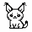

Always click Find media to get best results!
Show other media
Show technical sources
Raw captured CDN/segment URLs. Use these only if the main media choice is wrong.

FCDownloaderAlways click Find media to get best results!
Raw captured CDN/segment URLs. Use these only if the main media choice is wrong.